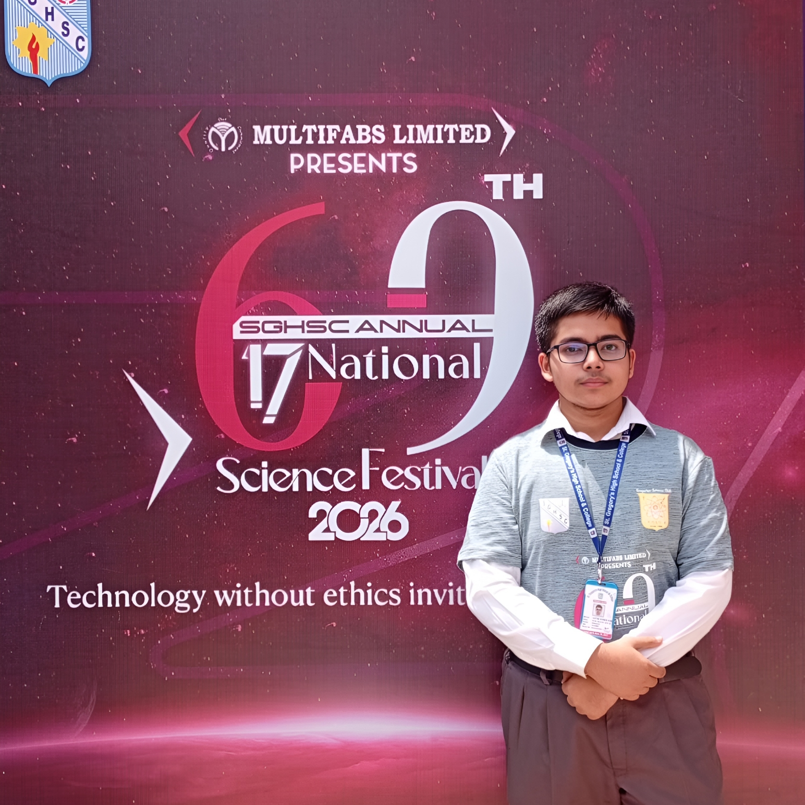
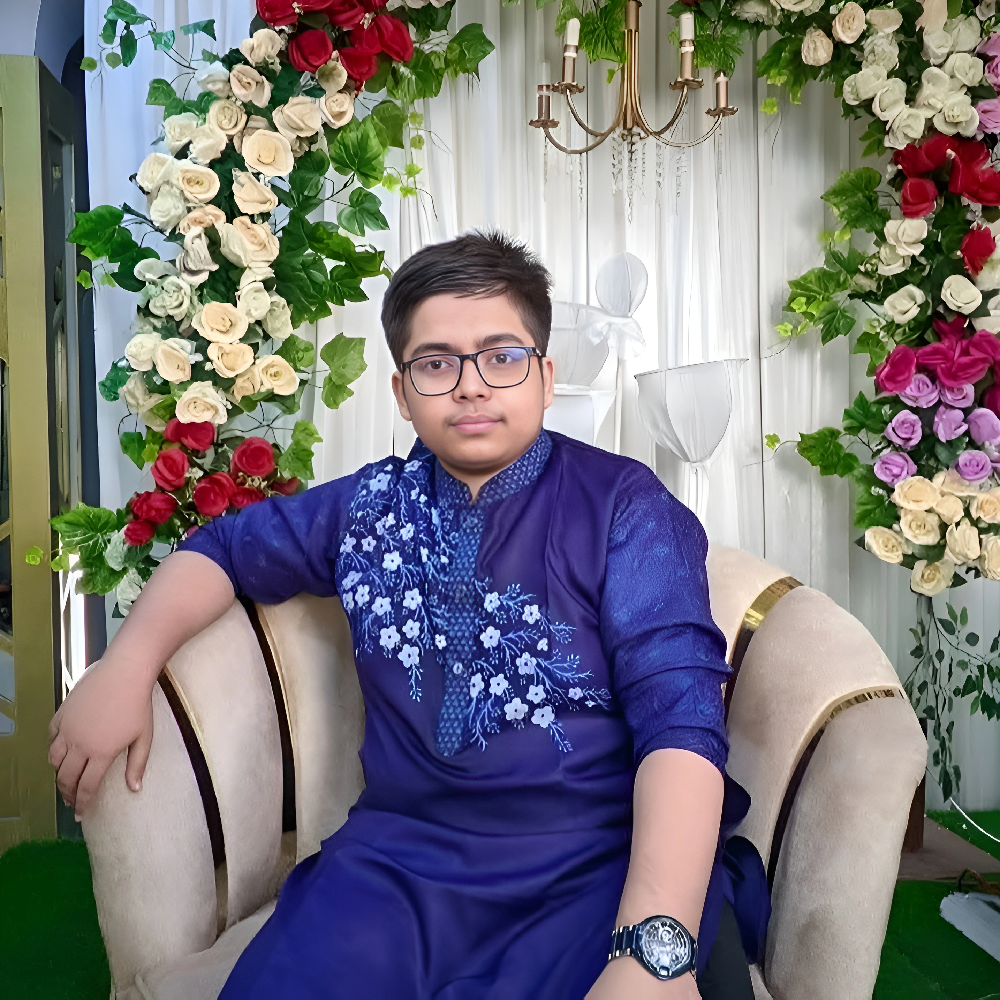

আমি Arpon Barman Ram। আমি বর্তমানে বিজ্ঞান বিভাগে পড়ালেখা করছি। পড়াশোনার পাশাপাশি নতুন নতুন প্রযুক্তি শেখা এবং ওয়েবসাইট তৈরি করা আমার শখ।
বিভাগ: বিজ্ঞান (Science Group)
প্রিয় বিষয়: গণিত, পদার্থবিজ্ঞান এবং কম্পিউটার সায়েন্স।